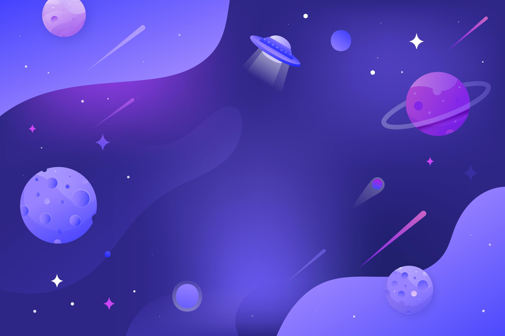

planets
Planet merupakan sebuah bintang yang mengorbit matahari dan memiliki gravitasi, planet bermacam macam ada bumi mars dan lainnya. Bumi merupkan rumah kita semua hanya dibumi yang aa kehidupan.Bumi mengorbit matahari selama 24jam.
haii anda sedang berada diwebsite saya
Planet merupakan sebuah bintang yang mengorbit matahari dan memiliki gravitasi, planet bermacam macam ada bumi mars dan lainnya. Bumi merupkan rumah kita semua hanya dibumi yang aa kehidupan.Bumi mengorbit matahari selama 24jam.
Mars adalah planet ke empat dibelah bumi.Di mars peneliti dari bumi belum menemukan kehidupan seperti di bumi, tetapi dimars hampir mirip dengan bumi. mars memiliki keunikan yaitu berwarna merah.